Обязанности по дому каждого кота
Кот должен:
- Кот должен отсыпаться за человека, всех его родственников, друзей и соседей вместе взятых.
- Кот должен защищать человека от комнатных растений.
- Кот постоянно должен поддерживать человека в форме, заставляя его непрестанно двигаться по квартире, нагибаться, собирая ручки, карандаши, носки и т. д.
- Кот должен крепко держать зубами ручку или карандаш, пока человек пытается писать.
- Кот постоянно должен проводить ревизию в холодильнике, даже если человек этого не хочет. Если он не хочет, значит, что-то там прячет, и с этим что-то следует хорошенько разобраться, а потом уж призвать к ответу самого человека.
- Кот должен ночью каждый час проверять, не заползла ли под одеяло человеку какая-нибудь змея.
- Кот время от времени должен тренировать себя на случай непредвиденного циркового выступления. Для этого он должен периодически устраивать полеты под куполом дома, прыжки с гардины на люстру и обратно и другие всевозможные запрыгивания.
- Кот должен помогать человеку стелить постель, внимательно наблюдая, чтобы под простыней не оказалось никаких предметов.
- Кот должен помнить, что сон для человека – это пустая трата времени, поэтому, завидев спящего человека, необходимо тут же его разбудить, прыгнув ему на живот, а еще лучше на голову.
- Кот должен каждое утро напоминать человеку старую пословицу: «Кто рано
встает, тому Бог дает».
И чем раньше встанет человек, тем больше ему (а заодно и коту) даст Бог. - Кот должен делиться с человеком всем, что у него есть. Постоянно отдавать часть меха на утепление одежды и пола и выкидывать половину еды из чашки.
- Кот должен петь песни, чтобы доставлять человеку радость. Даже если песни грустные.
- Кот должен проверять, по какой причине кто-то не закрыл шкаф или тумбочку и не задвинул ящик.
- Кот должен отгонять от человека плохие сны. Если кот заметит, что человек ворочается в постели, он непременно должен прыгнуть человеку на голову и начать отгонять дурные сны и кошмары.
- Кот должен знать, что лежит во всех коробках и пакетах. И на личном опыте убедиться, насколько там удобно и хорошо находиться.
- Кот должен во время сна человека заглушать наружный шум, громко урча под ухом.
ТАКСИИ
ГРОДНО
История города
Гродно — один из древнейших городов Беларуси. Город расположен на западе страны, на берегах реки Неман.
Благодаря своему географическому положению Гродно на протяжении многих веков имел большое торговое, культурное и политическое значение.
Первые письменные сведения о Гродно относятся к XII веку. В разные исторические периоды город входил в состав различных государственных образований.
На протяжении своей истории. Гродно развивался как важный торговый и ремесленный центр.
Особое место в истории города занимает период Великого княжества Литовского.
Гродно являлся одним из значимых городов государства, а его расположение на Немане способствовало развитию торговли и связей с другими территориями.
В современном Гродно сохранилось большое количество исторических зданий и памятников архитектуры.
Именно поэтому исторический центр города представляет большой интерес для жителей и туристов.
ДОСТОПРИМЕЧАТЕЛЬНОСТИ
Гродно известен большим количеством архитектурных и исторических памятников.
В городе можно увидеть старинные замки, храмы, площади, улицы и здания, сохранившие особенности разных эпох.
Кафедральный собор Святого Франциска Ксаверия (Фарный костел)
Кафедральный собор святого Франциска Ксаверия — главный католический храм Гродно.
Это один из красивейших храмов Беларуси, и самых исторически важных — прекрасному собору около 400 лет.
Он по праву считается образцом сакральной барочной архитектуры во всей Восточной Европе.
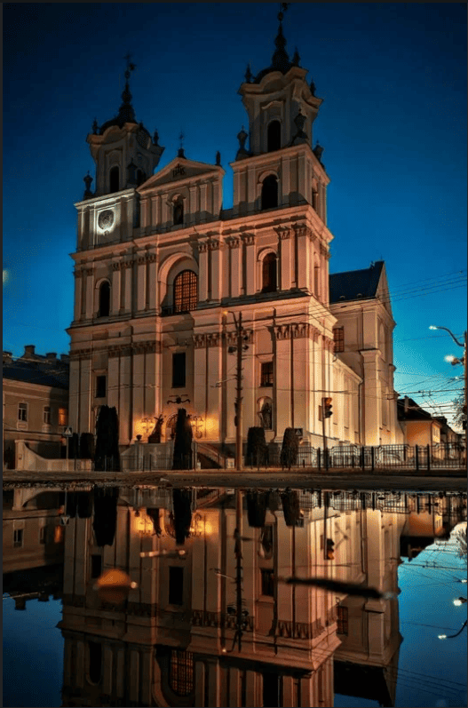
Гродненский государственный университет имени Янки Купалы
В сердце королевского города Гродно располагается главный корпус Гродненского государственного университета имени Янки Купалы.
Этот архитектурный шедевр окутан девичьим виноградом. Листья ярко-зеленого цвета тянутся к солнцу, словно стремятся собрать всю энергию.
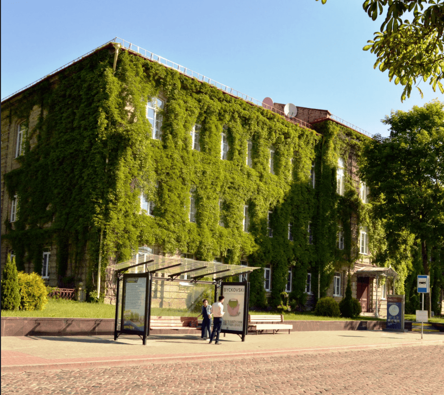
Советская улица
Советская улица — одна из самых старых улиц в историческом центре города Гродно.
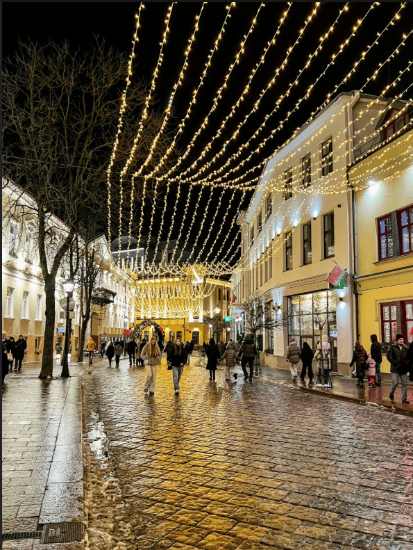
Зоопарк
Гродненский зоопарк – первый на территории Беларуси.
Основан в 1920-ые гг. Яном Кохановским (1894–1942) – учителем биологии в гимназии имени Адама Мицкевича.
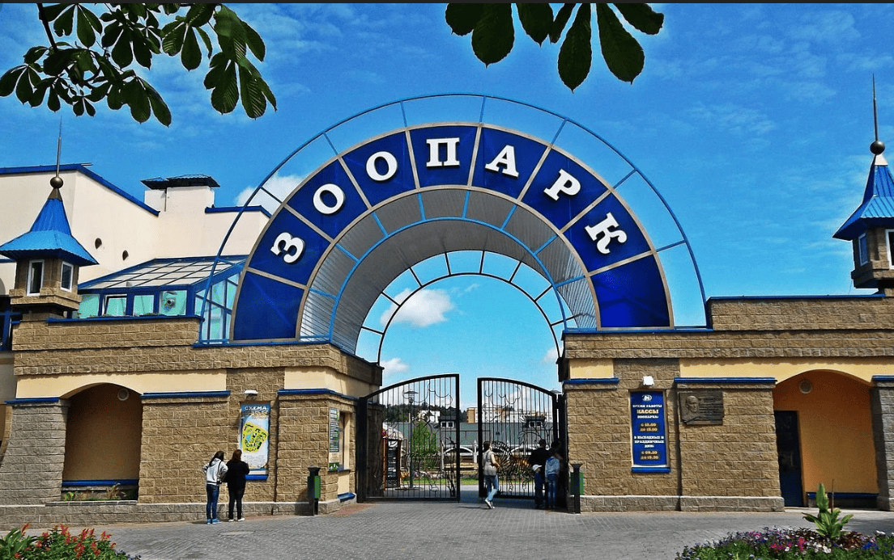
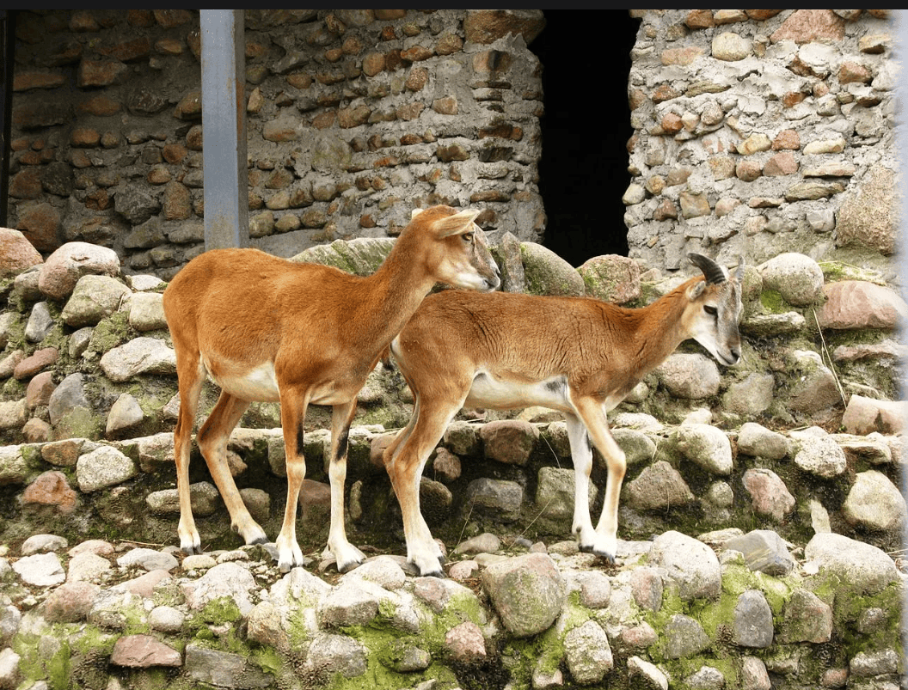
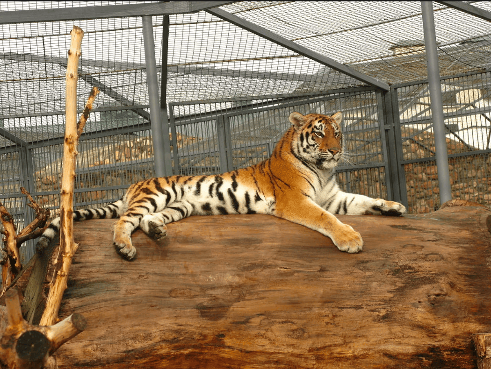
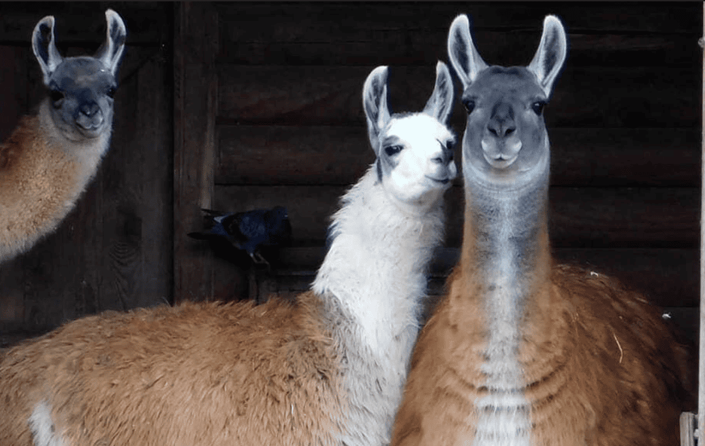
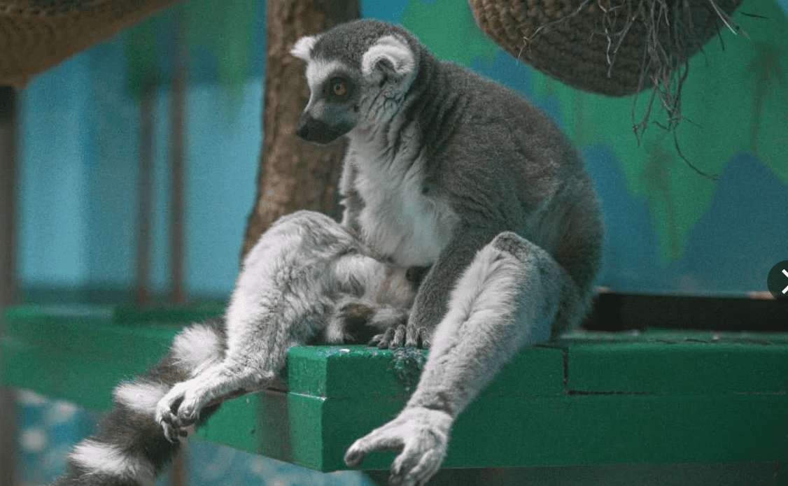
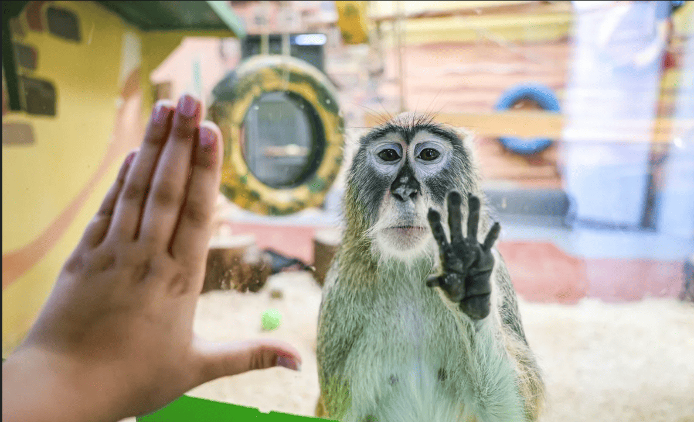
СИМВОЛЫ ГОРОДА
Как и другие города Беларуси, Гродно имеет официальные символы. К ним относятся герб и флаг города.
Флаг Гродно
Флаг города является ещё одним официальным символом Гродно.
Он используется во время городских мероприятий и на официальных объектах.
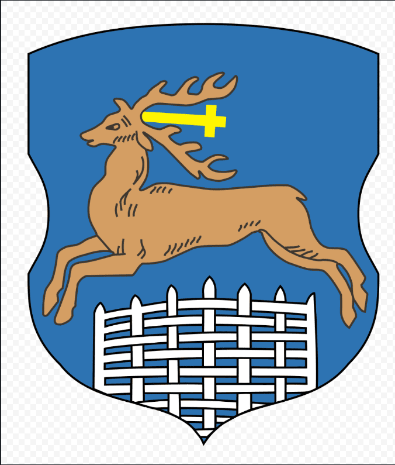
Герб Гродно
На гербе Гродно изображён образ оленя Святого Губерта, который перепрыгивает через серебряную ограду.
Этот символ имеет давнюю историю и является одним из узнаваемых символов города.
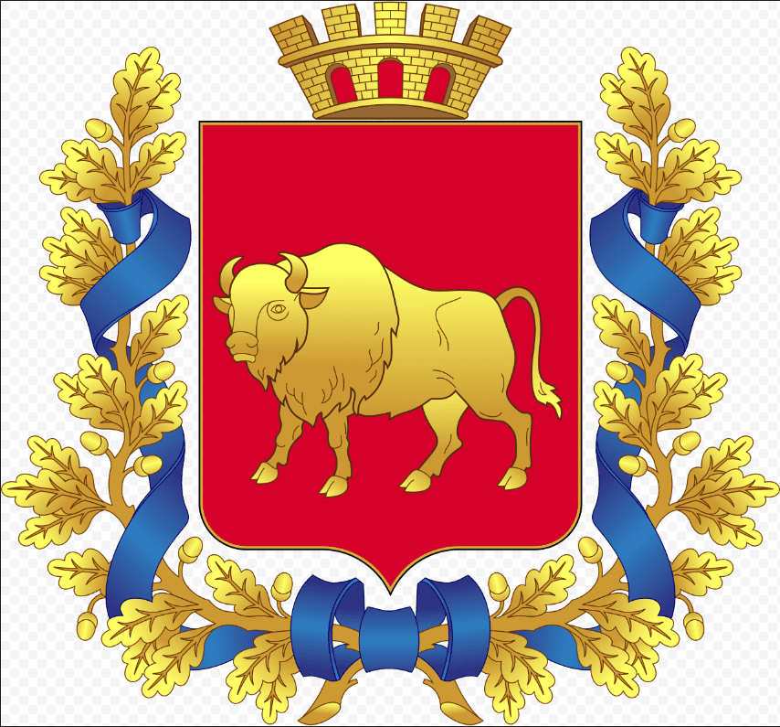
ГРОДНО НА КАРТЕ
Гродно расположен в западной части Беларуси, недалеко от государственной границы с Польшей и Литвой.
Город находится на берегах реки Неман.
Благодаря своему расположению Гродно исторически имел важное значение для торговли и международных связей.
Сегодня город также является важным транспортным и туристическим центром западной части Беларуси.
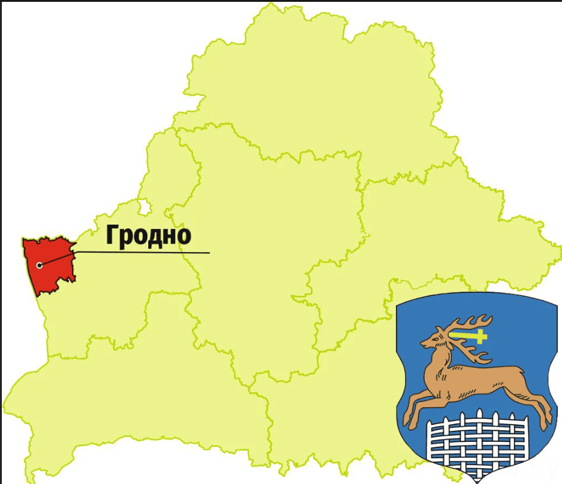
ГРОДНО СЕГОДНЯ
Современный Гродно является крупным административным, промышленным, культурным и образовательным центром Гродненской области.
В городе работают промышленные предприятия, учреждения образования, медицинские организации, магазины, кафе,
спортивные и культурные объекты.
Большую роль в жизни города играет образование.
В Гродно работают высшие и средние специальные учебные заведения, в которых обучаются тысячи студентов.
Город также развивается как туристический центр.
Туристов привлекают историческая архитектура, замки, храмы, старинные улицы и расположение города на берегу Немана.
НОВОСТИ ГРОДНО
В Гродно регулярно происходят различные события, связанные с городской жизнью, транспортом, культурой, спортом,
благоустройством и развитием инфраструктуры.
Изменения в транспортном сообщении
С 1 октября 2026 года между Гродно и Белостоком был добавлен ещё один ежедневный автобусный рейс.
Отправление из Гродно предусмотрено в 17:10, а обратный рейс из Белостока — в 8:15.
Изменения на дорогах
В начале октября в районе Гродно проводятся работы, связанные с ремонтом железнодорожного переезда на Озерском шоссе.
На период проведения работ движение на участке
ограничивается.
Городские события
В конце сентября в Гродно прошли открытые соревнования Гродненской области по лёгкой атлетике.
В соревнованиях приняли участие юные спортсмены, для которых это был первый старт после летнего перерыва.
Городская среда
В историческом центре Гродно продолжается развитие городской среды.
В конце сентября сообщалось о проведении аукциона по пяти земельным участкам на Большой Троицкой улице.
На этих участках могут появиться гостиницы, кафе и магазины.
Новости культуры
В сентябре 2026 года также сообщалось о планах восстановления и реставрации паровоза Л2135
для будущего показа в парке «Старый город» в Коробчицах.
ИНТЕРЕСНЫЕ ФАКТЫ О ГРОДНО
- Гродно является одним из древнейших городов Беларуси.
- Город расположен на берегах реки Неман.
- В историческом центре сохранилось большое количество памятников архитектуры.
- В Гродно находятся Старый и Новый замки.
- Одной из известных достопримечательностей города является Коложская церковь.
- Исторический центр Гродно привлекает большое количество туристов.